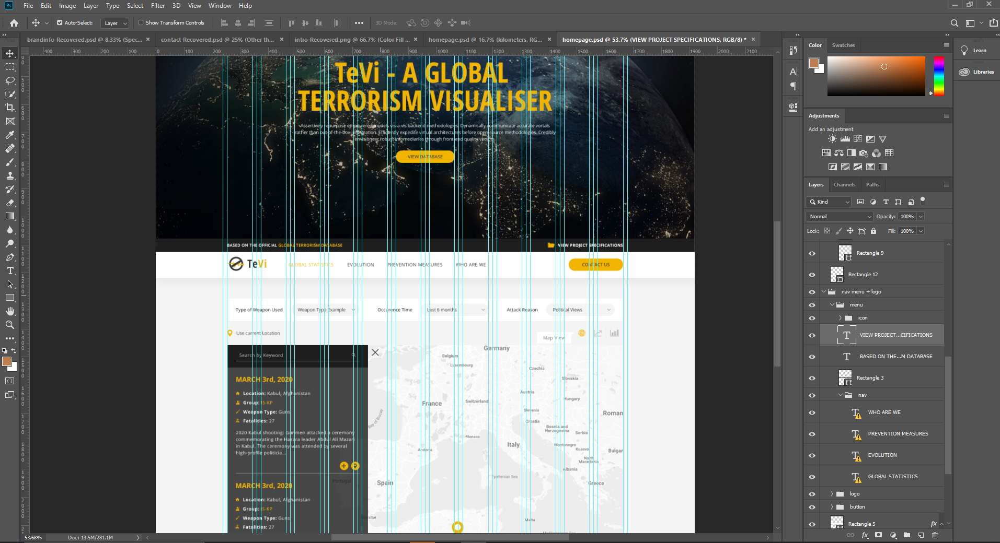

- Project made by:
-
Giurgea Elisa, Class A2, Year 2
Manolache Mihai, Class A2, Year 2
Vasilica Georgiana, Class E1, Year 2
- License
-
CC-BY
Task Managing
Considering that the Web Technologies project was one of the most elaborate projects we have encountered
in university, we had to plan our tasks concisely from week to week so that we can finish the project in
time, because we also had a "hiatus" with the whole COVID-19 situation.
Every few days we communicated using the Stream option on Discord and TeamViewer in some cases, when one
of us would have difficulties implementing a certain feature. We also used Google Drive to have all the
code in one place.
Of course, the main platform was Github, where we added commits at the end of the day or when a task was
finished after discussing it on Discord.
You can check the repository at https://github.com/MasterBowler/TeVi.
Discussing the functionality we want
After forming the team, we first had to meet up and discuss what we wanted to do regarding this project.
What functionality should we have: maps, charts? What secondary pages should we add?
In what direction should we go with the design?
Luckily we agreed the first time we meet. After that we created a Facebook group, a discord server, the drive folder,
the repository and everything else. Shortly after, we conclude what we will use and what we should study more
in order to have a good project. SCSS was something Elisa suggested, because she also had to learn it for her job.
Apart from that, we agreed to use ChartJs for the charts, beause it would simplify our work a lot and it was in the list
that Professor Sabin Buraga gave us. For the backend there were some discussions if we should use node.js or PHP, but we
agreed on PHP.
Designing the pages
In order to start implementing the frontend, we needed the design, so we started the project with Elisa creating the
pages in Photoshop using the classic 12 column grid and a good grouping system for the layers so that the implementation
part will be clear.

As we thought it would be better to have each page designed, we waited for a few days so that our designer would finish her
part and after that we started implementing. We didn't do the PSDs for responsive, because it isn't a complicated design and
it was easy enough to just talk about it.
Implementing the frontend part
After the design was ready, we started implementing the frontend and each of us had some different tasks to organise the HTML
and SCSS in similar proportions.
Elisa:
- HTML: Homepage and Contact
- SCSS: Grid, Widget general customization, general Spacings and Contact - Form and Features
Mihai:
- HTML: Team and Evolution
- SCSS: Backgrounds, general customization for Buttons and Typography, Footer, Alignment of the elements and the elements
needed for the Team Members
Georgiana:
- HTML: Prevention Measures
- SCSS: Typography spacings and colors, Skin sets and the Global customization of certain elements - input, buttons, headings and paragraphs etc.
The frontend took around two weeks and we constantly uploaded the files on the Google Drive folder as everything had to be syncronized the moment we started
using scss as we had to run the code.
Implementing the backend part and the functionality